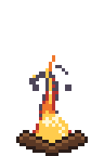
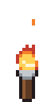
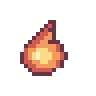

Pixel art fire animation: campfire and torch sprite sheets in your browser
These fire animations are Pixelbolt recipes: short JSON files that render to the same pixels every time. The campfire and the torch come from a small simulation of heat and smoke; the flame after them is drawn by hand in four frames.
Open one in the Pixelbolt playground, change a value or two, and download a sprite sheet, an atlas for your engine or a GIF. It is free and runs in your browser, with nothing to install.
Pixelbolt 0.9.1 · 25 October 2026 · On this page: Campfire · Torch · A hand-drawn flame
Reading the field names below: an effect's settings sit under effects → its name. An emitter (a source of heat, smoke, liquid or particles) is one entry in its emitters list, found by its "name" where it has one. Frames count from 0 (the playground's frame counter starts at 1), and x and y are pixels from the top-left corner.
Campfire

Flames rise from crossed logs, embers drift up and grey smoke curls away.
32 × 48 pixels, 24 frames of 70 ms, looping. Shown at 4×.
Open the campfire in the playground
Make it yours
These sit under effects → campfire in the recipe.
buoyancy(now 0.45): how hard the heat rises. A higher value lifts the smoke and embers higher and faster.cooling(0.24): the share of heat lost each frame. Raise it for a lower fire. Lowering it makes the flame taller only gradually: at 0.16 it is a little taller and its smoke a little redder; at 0.08 it is clearly taller, and the smoke stays hot enough to draw red instead of grey.vorticity(0.45): keeps small swirls alive, so the flames and smoke curl.flickeron thefireemitter (0.6): random variation from cell to cell and frame to frame, which breaks the base of the flame into tongues.countin theembersemitter'ssparks(0.5): embers per frame. Fractions mean some frames get one and some don't.
Torch

A small flame flickers on a wooden handle with a metal cup and throws the odd ember.
16 × 32 pixels, 16 frames of 70 ms, looping. Shown at 4×.
Open the torch in the playground
Make it yours
These sit under effects → torch, except palette, which is at the top of the recipe.
radiuson theflameemitter (3.5): the size of the hot disc the flame grows from. A bigger disc gives a bigger flame.noiseon theflameemitter (0.8): a random push every frame, the turbulence that makes the flame dance.flickeron theflameemitter (0.35): how much the flame's strength varies from cell to cell and frame to frame.countin theembersemitter'ssparks(0.15): embers per frame.palette: the flame usesr,o,yandW, from the coolest colour to the hottest. Change their hex values for a blue or green flame.
A hand-drawn flame

Not every fire needs a simulation. This flame is one shape written as rows of text, then stamped, edited and mirrored across four frames. The playground lists it as Embers.
24 × 24 pixels, 4 frames of 80 to 120 ms, looping. Shown at 4×.
Open the hand-drawn flame in the playground
Make it yours
This is a plain recipe: frames, palette, animations and sheet are at the top level.
durationon each frame (110, 90, 120 and 80): how long that frame stays on screen, in milliseconds.flipXon the stamp inflicker-c(true): mirrors the flame for that frame.palette(o,r,a,yandw): the five colours, from the dark outline to the white-hot core.framesinanimations→burn: the order the four frames play in.sheet(columns4,padding1): the layout of the exported sprite sheet. Setpaddingto 0 for a plain grid of touching cells.
Make your sprite sheet in four steps
- Open an effect above with its Open … in the playground button. The link carries the whole recipe and names Pixelbolt 0.9.1, and the playground renders it in your browser. There is nothing to install and no account.
- Change a value in the Recipe JSON box. The preview renders again after each edit. If the JSON breaks, it says what is wrong, usually with the line number.
- Choose a scale for the frame PNG and the GIF, from 1× to 16×. The sheet and atlas stay at the art's own size (see below).
- Download the files you need (listed below). Copy link makes a link to your edited version.
Export for your game engine
- Sheet PNG: every frame on one transparent sprite sheet.
- Atlas PNG + JSON: the same sheet plus a TexturePacker-style JSON hash with each frame's rectangle, its duration in milliseconds and the named animations. Phaser loads it with
load.atlas. In Godot, Unity or another engine, slice the sheet as a grid of equal cells; the game integration notes explain how. - GIF: the animation for a devlog, a store page or a chat, at the scale you chose. Before you download it, the playground shows its size in pixels and its number of frames.
- Frame PNG: the frame on screen, at the scale you chose.
- Recipe JSON: the recipe itself, to keep, edit or share.
Sheets come at the art's own size, one pixel per pixel. For a bigger sheet, set "scale" in the recipe's top-level "sheet" (add "sheet": { "scale": 4 } if it has none; whole numbers from 1 to 16), or scale it in your engine with nearest-neighbour filtering. Every PNG the playground exports carries its recipe, so you can open it in the playground later (Open file, or drop it on the page) and carry on editing.
The same from the command line
With Node.js 20 or newer, save the recipe (the playground's Recipe JSON button saves it as campfire.fluid.json, or open it from the 0.9.1 package and save it), then run:
npx -y pixelbolt@0.9.1 compile campfire.fluid.json --out campfire.json
npx -y pixelbolt@0.9.1 gif campfire.json --scale 4 --out campfire.gif
npx -y pixelbolt@0.9.1 render campfire.json --out campfireRun them in the folder where you saved the recipe; Pixelbolt won't overwrite existing files unless you add --force. compile runs the simulation and writes the result as an ordinary recipe of frames. gif writes the animation as a GIF. render writes a folder with the sprite sheet, its atlas JSON, every frame as a PNG, an animated PNG, CSS classes, a small Canvas player, a preview page and the recipe. The same commands work for torch.fluid.json. The hand-drawn flame is already a plain recipe, so it skips compile. Save ember.json (or use ember.pixel.json if you saved it from the playground) and run:
npx -y pixelbolt@0.9.1 gif ember.json --scale 4 --out ember.gifFor AI agents: Pixelbolt also runs as a local MCP server, whose pixel_compile tool compiles these recipes. See Connect an agent through MCP in the README.
Licence
Pixelbolt is free and open source under the MIT licence. The example recipes on this page ship in its MIT-licensed npm package, and its README says the included artwork is original and covered by the same licence.
Want them ready-made?
Elemental FX is a pack of 27 animated pixel-art effects made with Pixelbolt: elemental powers, impacts, fire, smoke, goo, lava and magic, as transparent sprite sheets with JSON atlases and Godot 4 SpriteFrames files. $4.99 or more on Gumroad.
More pixel art effect guides
- Explosions: a fireball with smoke and sparks, and small particle bursts
- Smoke and steam: a cartoon smoke puff, a steam vent and a dust wave
- Water: a waterfall, a splash, a drip and a dam break
- Slime and honey: a squashing slime, a bursting slime, pouring honey and a honey drop
- Magic: a spell swirl and a bubbling potion
All guides · The playground · Pixelbolt home
Comparing effect tools? See Pixel FX Designer alternatives: 7 pixel-art effect tools compared. For agents: pixel art MCP servers compared.